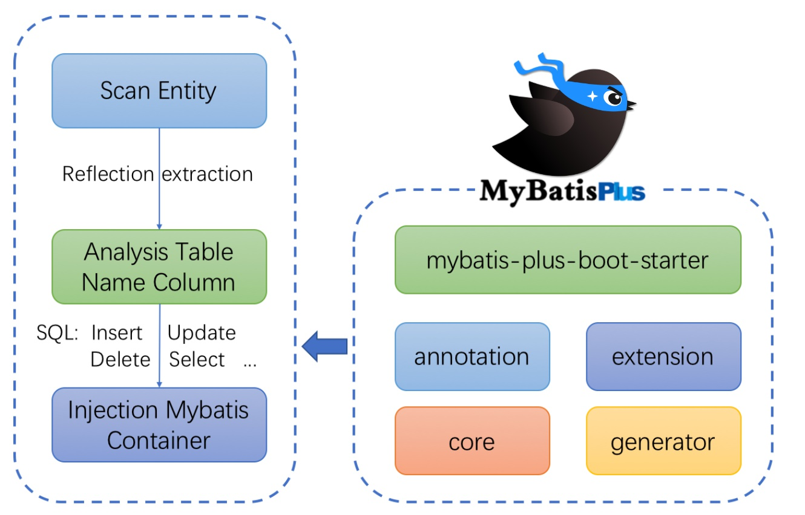

Mybatis-Plus
1.什么是 Mybatis-Plus
1.1 什么是 Mybatis-Plus
MyBatis-Plus （简称 MP）是一个 MyBatis 的增强工具，在 MyBatis 的基础上只做增强不做改变，为简化开发、提高效率而生。
1.2 官网
官网 MyBatis Plus，简化 MyBatis ！
1.3 特性
- 无侵入：只做增强不做改变，引入它不会对现有工程产生影响，如丝般顺滑
- 损耗小：启动即会自动注入基本 CURD，性能基本无损耗，直接面向对象操作， BaseMapper
- 强大的 CRUD 操作：内置通用 Mapper、通用 Service，仅仅通过少量配置即可实现单表大部分 CRUD 操作，更有强大的条件构造器，满足各类使用需求, 以后简单的CRUD操作，它不用自己编写 了！
- 支持 Lambda 形式调用：通过 Lambda 表达式，方便的编写各类查询条件，无需再担心字段写错
- 支持主键自动生成：支持多达 4 种主键策略（内含分布式唯一 ID 生成器 - Sequence），可自由配置，完美解决主键问题
- 支持 ActiveRecord 模式：支持 ActiveRecord 形式调用，实体类只需继承 Model 类即可进行强大的 CRUD 操作支持自定义全局通用操作：支持全局通用方法注入（ Write once, use anywhere ）
- 内置代码生成器：采用代码或者 Maven 插件可快速生成 Mapper 、 Model 、 Service 、 Controller 层代码，支持模板引擎，更有超多自定义配置等您来使用（自动帮你生成代码）
- 内置分页插件：基于 MyBatis 物理分页，开发者无需关心具体操作，配置好插件之后，写分页等同于普通 List 查询
- 分页插件支持多种数据库：支持 MySQL、MariaDB、Oracle、DB2、H2、HSQL、SQLite、 Postgre、SQLServer 等多种数据库
- 内置性能分析插件：可输出 Sql 语句以及其执行时间，建议开发测试时启用该功能，能快速揪出慢 查询
- 内置全局拦截插件：提供全表 delete 、 update 操作智能分析阻断，也可自定义拦截规则，预防误 操作
1.4 支持数据库
任何能使用
mybatis进行 CRUD, 并且支持标准 SQL 的数据库
1.5 框架结构

2.快速入门
2.1创建SpringBoot项目
1、创建一个空的 Spring Boot 工程
2、添加项目依赖
1 | <dependencies> |
3、修改数据库连接信息
1 | spring: |
4、修改主启动类
1 |
|
2.2 创建数据库以及表结构
1 | DROP TABLE IF EXISTS user; |
2.3 开发实体类
1 | package com.wj.pojo; |
2.4 开发Mapper通用实现
1 | package com.wj.mapper; |
2.5 测试
1 |
|
2.6 注意
@Repository 和 @Mapper 的区别
@Repository需要在Spring中配置扫描地址，然后生成Dao层的Bean才能被注入到Service层中。如下，在启动类中配置扫描地址：
1 |
|
@Mapper不需要配置扫描地址，通过xml里面的namespace里面的接口地址，生成了Bean后注入到Service层中。
也就是@Repository多了一个配置扫描地址的步骤；
使用 Mybatis-plus 不需要在 Mapper 文件上添加注解，只需在主启动类上配置 mapper 扫描路径即可。；
3.常用注解说明
3.1 @TableName
描述：表名注解
| 属性 | 类型 | 必须指定 | 默认值 | 描述 |
|---|---|---|---|---|
| value | String | 否 | “” | 表名 |
| schema | String | 否 | “” | schema |
| keepGlobalPrefix | boolean | 否 | false | 是否保持使用全局的 tablePrefix 的值(如果设置了全局 tablePrefix 且自行设置了 value 的值) |
| resultMap | String | 否 | “” | xml 中 resultMap 的 id |
| autoResultMap | boolean | 否 | false | 是否自动构建 resultMap 并使用(如果设置 resultMap 则不会进行 resultMap 的自动构建并注入) |
| excludeProperty | String[] | 否 | {} | 需要排除的属性名(@since 3.3.1) |
3.2 @TableId
描述：主键注解
| 属性 | 类型 | 必须指定 | 默认值 | 描述 |
|---|---|---|---|---|
| value | String | 否 | “” | 主键字段名 |
| type | Enum | 否 | IdType.NONE | 主键类型 |
IdType 主键类型
| 值 | 描述 |
|---|---|
| AUTO | 数据库ID自增 |
| NONE | 无状态,该类型为未设置主键类型(注解里等于跟随全局,全局里约等于 INPUT) |
| INPUT | insert前自行set主键值 |
| ASSIGN_ID | 分配ID(主键类型为Number(Long和Integer)或String)(since 3.3.0),使用接口IdentifierGenerator的方法nextId(默认实现类为DefaultIdentifierGenerator雪花算法) |
| ASSIGN_UUID | 分配UUID,主键类型为String(since 3.3.0),使用接口IdentifierGenerator的方法nextUUID(默认default方法) |
分布式全局唯一ID 长整型类型(please use ASSIGN_ID) |
|
32位UUID字符串(please use ASSIGN_UUID) |
|
分布式全局唯一ID 字符串类型(please use ASSIGN_ID) |
3.3 @TableField
描述：字段注解(非主键)
| 属性 | 类型 | 必须指定 | 默认值 | 描述 |
|---|---|---|---|---|
| value | String | 否 | “” | 数据库字段名 |
| el | String | 否 | “” | 映射为原生 #{ ... } 逻辑,相当于写在 xml 里的 #{ ... } 部分 |
| exist | boolean | 否 | true | 是否为数据库表字段 |
| condition | String | 否 | “” | 字段 where 实体查询比较条件,有值设置则按设置的值为准,没有则为默认全局的 `%s=# |
本博客所有文章除特别声明外，均采用 CC BY-NC-SA 4.0 许可协议。转载请注明来自 Eric！
 微信
微信 支付宝
支付宝

评论